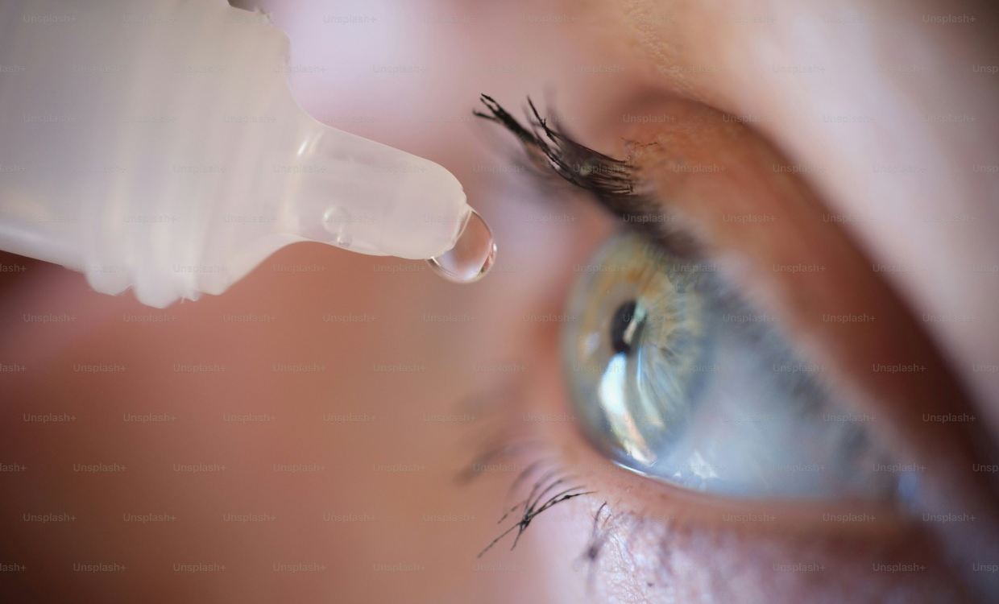

診療案内
ドライアイとは

ドライアイは、涙の量が少ない病気と思われていますが、涙の質が下がるのもドライアイです。
涙は、外側より油層・水層・ムチン層の3層からできています。油層は乾燥しないように目を守っています。水層は涙の大部分を目に酸素や栄養を送っています。ムチン層は角膜に接していて涙を目にとどまらせる働きをしています。
どの層に障害が出ても、ドライアイの症状が出る可能性があります。
近年のパソコン業務の増加やスマートフォンの普及などにより、ドライアイの患者様は増えています。現在、2000万人以上の患者さんがいると言われています。
また、ドライアイの原因として、マイボーム腺機能不全（MGD）が86％を占めるという報告もあります。
ドライアイの原因
-
目の刺激感
- > ゴロゴロする
- > 痛い
- > 乾く ...など
-
目の見えにくさ
- > 見えにくい
- > かすむ
- > まぶしい ...など
ドライアイの治療
① 点眼治療
まず、最初は保湿を目的とする目薬を処方するのが一般的です。保湿を目的とする目薬は、数多く出ています。
それでも、効果が不十分なときは、涙液の産生を増やす目薬を使用します。最近では、ジクアス点眼液3％やムコスタ点眼液UD2％が使用されています。
ジクアス点眼液3％は、涙の層の水層とムチン層の分泌を促進する目薬です。
ムコスタ点眼液UD2％は、涙液層のムチン層の分泌を促進する目薬で、粘膜の保護や修復に効果があります。
② 涙点プラグ
問診表をお渡ししますので、ご記入をお願いします。検査・診察の参考にいたします。
当院はホームページより問診票の印刷が可能です。
事前に問診表を印刷していただき、ご記入していただくことも可能です。
③ 涙点閉鎖術
初診の患者様は、症状に応じて必要な検査を受けていただきます。
④ 血清点眼
医師が、問診票と検査結果を参考にして、診察させていただきます。 診察の結果、さらなる検査が必要になる場合があります。
日常生活の注意点
視力の確認
視力が低下していたりメガネの度が合っていないと、目を凝らすため瞬目（まばたき）の回数が減り、涙が蒸発してドライアイが悪化します。視力の検査も重要です。
エアコンなどによる乾燥
部屋が乾燥し、ドライアイが悪化することがあります。部屋の湿度には注意してください。
パソコンやスマートフォンの長時間使用
パソコンやスマートフォンを長時間される方は、画面を凝視することにより瞬目（まばたき）の回数が減ります。それにより涙が蒸発してドライアイが悪化します。 意識して瞬目（まばたき）を多くしてください。また、こまめに休憩をとり、目を休ませてください。
パソコンの画面を目線より下に
上を見ると自然に瞼（まぶた）は大きく開き、涙が蒸発してドライアイが悪化します。パソコン画面の位置を視線の下側にして瞼（まぶた）を下げることにより目の乾燥を防ぐことができます。
ドライアイのよくある質問
-
乾く、充血する、異物感がある、眼脂（めやに）が出る、涙が出る、目が痛い、目がかゆい、目が重い、目が疲れる、まぶしい、見にくいなどさまざまです。
-
涙は年齢とともに少なくなるため、年齢とともになりやすく、女性に多いです。
最近問題になるのは、パソコン業務を行う人です。
パソコン業務に集中すると瞬目（まばたき）が減り、ドライアイなどの眼症状を起こします。
VDT症候群といい、長時間ディスプレイを見続けたりキーボードを使用することで、 目以外にもさまざまな症状が出ることが知られています。 -
ストレスや膠原病が原因になることがあります。
その代表がシェーグレン症候群です。
女性の方が男性より2倍なりやすいことが知られています。
また、年齢とともに涙の分泌は減りますので、ドライアイの頻度は増えます。 -
ドライアイが重度の可能性があります。
また、防腐剤の入っている目薬の回数が多いと、角膜（黒目）に傷がつくことがあります。
そのようなときは、防腐剤の入ってない目薬に変えることがあります。
眼科医の診察を受けることをお勧めします。 -
ドライアイは治る病気ではありません。
目薬の治療や環境の改善などでコントロールする病気です。
目薬を季節によって変えるなど、こまめに調整することが重要です。
治らない場合は、目薬の種類の変更や目薬以外の治療もありますので、眼科医にご相談ください。